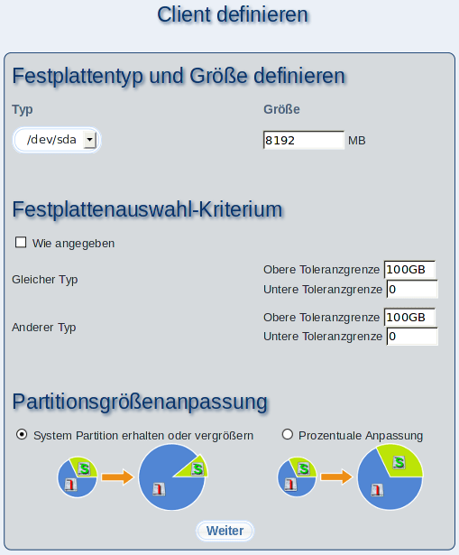

Geben Sie hier die Eigenschaften der Festplatte des definierten Clients an. Da keine Hardwareinformationen über diesen Client ermittelt werden können, müssen Sie definieren, um welchen Festplattentyp (IDE, SCSI) es sich handeln und wie groß das Laufwerk sein soll. Die hier definierte Größe sollte ungefähr mit den Festplattengrößen der abgeleiteten Clients übereinstimmen, die Sie über diesen definierten Client installieren möchten.
Unterabschnitte
dodger
2014-01-22